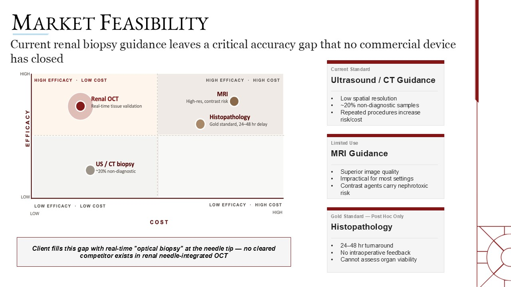

Consulting · Healthcare Technology
Healthcare Technology Consulting Engagement
A five-person consulting team developing a commercialization strategy for a renal optical coherence tomography technology.
- Client
- A renal imaging technology company
- Program partner
- A regional bioscience organization
- Team
- Five consultants; I was team leader
- Timeline
- January–May 2026
- Focus
- Commercialization strategy

The engagement
This engagement was part of a graduate Business Consulting course at the University of Oklahoma. Our professor gave the class a list of real organizations, each team ranked the projects that interested it, and our team chose a renal optical coherence tomography (OCT) technology. We then worked with a regional bioscience organization and the client, a renal imaging technology company, from January to May 2026.
The technology places real-time, tissue-level imaging at the tip of a biopsy needle. Kidney biopsies today are typically guided by ultrasound or CT, and roughly one in five samples is non-diagnostic, which leads to repeat procedures and added risk and cost. MRI guidance is impractical in most settings, and histopathology, the gold standard, only delivers answers a day or two later. In our analysis, the needle-based approach also avoids a surgical procedure to reach the organ, which makes it quicker and less costly for the patient and care team, and it does not require a specialist to be involved in the biopsy. The client had a working prototype with some clinical testing completed, and our task was to determine how it could become a viable business and in what order the company should take its next steps.
My role
I served as team leader. This was the client’s first engagement with an MBA team, so the first task was defining what we could responsibly deliver in a single semester. As the only team member with prior consulting experience, I drafted the scope of work and timeline and secured approval from three audiences: the team, which had to be confident of finishing in time; the professor, who needed the work to meet the course objectives; and the client, who needed the deliverables to match its expectations.
I then asked each teammate which areas they preferred and assigned the work around those strengths. I took the market analysis because I had never led one and wanted the experience, and I also owned the final deck and the client presentation. The team met twice a week, once in class and once with the client, and my PMP training helped me hold the timeline and keep every deliverable tied to the approved scope.
The steepest challenge was a personal one. I had no background in the medical field, so I spent the first weeks learning clinical terminology and how the industry works before I could analyze it with confidence.
How we worked
Our research drew on peer-reviewed studies, market and hospital databases, and interviews with the client. We built the financial model in Excel and managed the schedule with a Gantt chart. The final deliverable was organized around three workstreams: market feasibility, financial modeling, and strategic commercialization.
What we found
For market feasibility, I sized the opportunity using a TAM/SAM/SOM approach. The U.S. performs roughly 52,000 percutaneous renal biopsies and evaluates about 20,000 deceased-donor kidneys each year, for a total of about 72,000 procedures. We narrowed that to a serviceable segment of about 11,100 procedures a year in transplant centers and top academic hospitals, then modeled a measured ramp in penetration after regulatory clearance. Guidance systems are also the fastest-growing segment of the biopsy device market, and we found no cleared competitor offering needle-integrated OCT for the kidney. The comparison below, from our final deck, shows where current options fall short.

The financial model projected five years of revenue under base, upside, and downside scenarios. The assumption that moved the results most was how much of the serviceable market the product could reach.
Our recommendation
We recommended a three-phase plan over roughly 30 months, designed to reduce risk early, validate clinically, and position the company for a strategic exit.
Phase 1, regulatory and foundation (months 0–6). Open a pre-submission conversation with the FDA to confirm the regulatory pathway, engage a consultant experienced with needle-guidance devices, and file the core intellectual property.
Phase 2, clinical validation (months 6–18). Launch pilots with transplant centers and clinical leaders at partner academic programs, including OU Health Sciences Center, in exchange for outcome data. The goal was real-world evidence of fewer non-diagnostic biopsies, fewer repeat procedures, and lower complication rates.
Phase 3, scale and exit positioning (months 18–30). Advance toward FDA clearance, strengthen the clinical and economic story for strategic buyers, and begin conversations with partners and potential acquirers.
We recommended transplant centers as the beachhead for three reasons. Outcomes matter most there, because complications carry outsized consequences, which speeds adoption. Roughly 250 U.S. transplant centers account for most high-acuity renal biopsy volume, so the market is concentrated and reachable. And evaluating a donor organ’s viability before transplant is a use case that ultrasound cannot address, which opens a second source of revenue.
Because payers and partners want outcomes data rather than device specifications, we built the value story around procedure cost avoidance: fewer repeat biopsies, less hemorrhage management, and faster diagnosis.
The outcome
We presented virtually to our program partner, which carried our work to the client. The client responded positively. It was already pursuing one of the paths we recommended, so our analysis helped confirm the direction it had chosen. In May 2026 the company took the recommendations abroad to pursue further funding.
What I took away
This engagement taught me how much a commercialization plan depends on translating technical strengths into the language of buyers, regulators, and investors. It also showed me what happens when a young company begins its search for funding. The market analysis gave me a method that I carried into my Portugal engagement, and the scope-of-work discipline from my planning and PMP background kept a five-person team on schedule.
If I ran it again, I would choose an area where I was better prepared, such as financial modeling. Even so, being stretched academically and professionally in an unfamiliar industry is what made the work worthwhile.